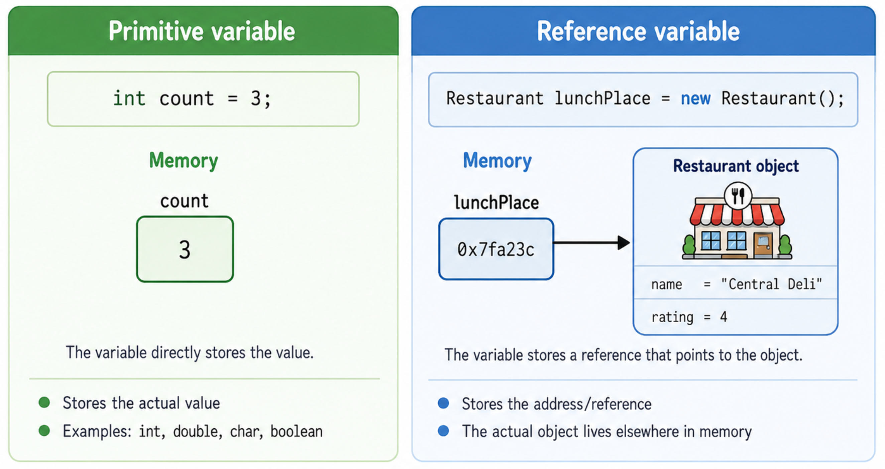
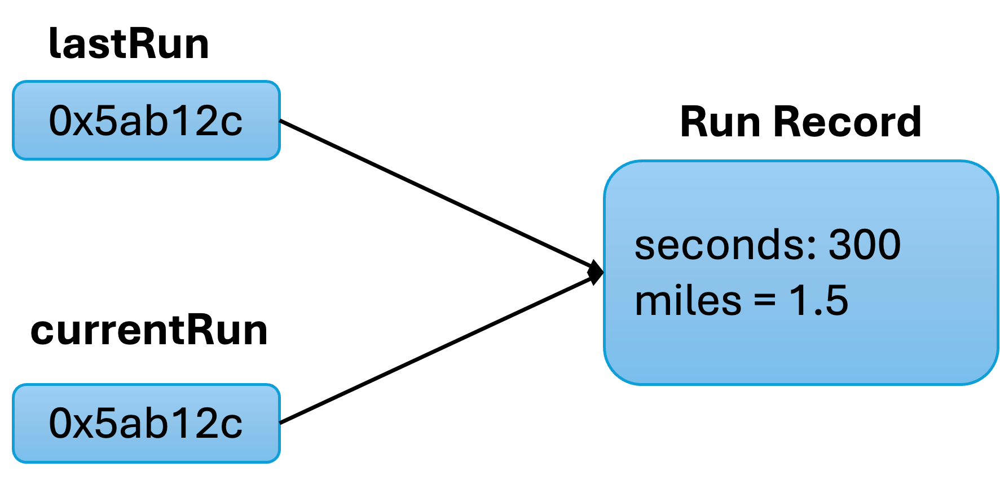

Objects and Classes
Liting Zhang
University of West Florida
Today's Roadmap
Chapter 7 moves from writing one program to designing our own types.
Objects group related data and behavior into one idea.
A class is the blueprint used to create objects.
Private fields protect object data from careless outside changes.
Public methods give the safe actions other code can use.
Constructors initialize new objects.
References explain why two variables may point to the same object.
Static members, packages, Javadocs, unit tests, wrappers, and ArrayLists complete the class workflow.
Reading focus: Chapter 7, Objects and Classes
What You Should Be Able To Do
Explain the difference between a class and an object.
Create objects with
newand call methods using dot notation.Write a small class with private fields, mutators, accessors, and constructors.
Decide when to use instance fields, static fields, and local variables.
Explain why references can create aliasing.
Pass objects to methods and understand what can be modified.
Write simple class tests before relying on the class in a larger program.
Use this question while designing: what data does this object store, and what actions should it provide?
Objects Group Data and Behavior
Real programs become easier to understand when related information is grouped together.
A restaurant has a name, rating, phone number, and address.
A runner has a time, distance, and speed.
A car has a model year, purchase price, and current value.
A class lets us group those related values with the actions that use them.
Instead of managing many separate variables, we can work with one object that represents one thing.
Class Vocabulary: Definitions and Examples
Use these words carefully. They appear in code, compiler messages, and class diagrams.
class: a new type definition used to create objects. Example:
Restaurantobject: one instance created from a class. Example:
lunchPlacefield: data stored inside each object. Example:
name,ratingmethod: an action an object can perform. Example:
setRating(),print()constructor: special code that initializes a new object. Example:
new Restaurant()reference variable: a variable that refers to an object. Example:
Restaurant lunchPlace
Access and Static Keywords
These keywords control where a member can be used and what it belongs to.
public: code outside the class is allowed to use it. Example:
public void print()private: only code inside the same class can use it. Example:
private int ratingstatic: the member belongs to the class, not to one object. Example:
private static int nextIdstaticdoes not mean constant. It means shared at the class level.
Abstraction and Information Hiding
Abstraction means using an object without needing to know every internal detail.
A user of an oven turns a knob. The user does not touch the flame directly.
A user of a
Restaurantobject callssetRating(). The user should not directly edit private fields.Information hiding keeps object data safe and gives the class control over how the data changes.
This is why we usually make fields private and methods public.
Class Definition: Fields and Methods
A class definition lists the data each object stores and the methods each object provides.
public class Restaurant {
private String name; // field: each object has its own name
private int rating; // field: each object has its own rating
public void setName(String restaurantName) { // public method
name = restaurantName;
}
public void setRating(int userRating) {
rating = userRating;
}
public void print() {
System.out.println(name + " -- " + rating);
}
}example:
Restaurant.java
Private Fields Protect Object Data
Private fields cannot be accessed directly from outside the class.
This protects the object from invalid or accidental changes.
The class controls changes through its public methods.
A class user should not need to know the exact field layout.
class Restaurant {
private String name;
public Restaurant() {
name = "NoName";
}
}
public class PrivateFieldAccessBroken {
public static void main(String[] args) {
Restaurant place = new Restaurant();
place.name = "Central Deli";
}
}example:
PrivateFieldAccessBroken.java
Mutators, Accessors, and Output Methods
These method names help readers understand the job of each method.
mutator/setter: a method that changes a field value. Example:
setName(...)accessor/getter: a method that returns a field value. Example:
getName()output method: a method that displays object information. Example:
print()These public methods form the class interface.
Private Helper Methods
A private helper method supports the public methods but is not meant to be called by class users.
public class Employee {
private String name;
private double hourlySalary;
private double hoursPerWeek;
private double weeklySalaryCalc() { // helper used only inside Employee
return hourlySalary * hoursPerWeek;
}
public void printPayslip() { // public method used by other code
System.out.println("Name: " + name);
System.out.printf("Weekly salary: $%.2f%n", weeklySalaryCalc());
}
}example:
Employee.java,EmployeeTester.java
Constructors Initialize Objects
A constructor runs when a new object is created.
It has the same name as the class.
It has no return type, not even
void.It usually initializes fields so the object starts in a valid state.
If you write no constructor, Java provides a default no-argument constructor.
Constructors in Restaurant
One constructor creates a default object. Another constructor accepts starting values.
public class Restaurant {
private String name;
private int rating;
public Restaurant() { // no-argument constructor
name = "NoName";
rating = -1;
}
public Restaurant(String initName, int initRating) { // overloaded constructor
name = initName;
rating = initRating;
}
}example:
Restaurant.java
Constructor Overloading
Constructor overloading means a class has more than one constructor with different parameter lists.
public class Pet {
private String name;
private int age;
public Pet() { // no starting values
name = "NoName";
age = -1;
}
public Pet(String initName) { // name only
name = initName;
age = 0;
}
public Pet(String initName, int initAge) { // name and age
name = initName;
age = initAge;
}
}Java chooses the constructor by matching the arguments.
example:
Pet.java,PetRunner.java
Incorrect Example: Missing No-Argument Constructor
If you define a constructor with arguments, Java no longer creates a no-argument constructor automatically.
public class MissingNoArgConstructorBroken {
static class PetBroken {
private String name;
public PetBroken(String initName) {
name = initName;
}
}
public static void main(String[] args) {
PetBroken pet = new PetBroken();
}
}This incorrect example shows code that the compiler rejects.
Fix it by adding
public PetBroken()or by passing a String argument.example:
MissingNoArgConstructorBroken.java
Dot Notation Calls Methods on Objects
Dot notation means: use this object, then call this method.
The object is on the left of the dot.
The method is on the right of the dot.
Arguments go inside the parentheses.
Each object keeps its own field values.
lunchPlace.setName("Central Deli");
lunchPlace.setRating(4);
lunchPlace.print();Object Creation and Method Calls
To use a class, create an object and call public methods on that object.
public class RestaurantFavorites {
public static void main(String[] args) {
Restaurant lunchPlace = new Restaurant(); // default constructor
Restaurant dinnerPlace = new Restaurant("Friends Cafe", 5); // overloaded constructor
lunchPlace.setName("Central Deli"); // call a method on lunchPlace
lunchPlace.setRating(4);
System.out.println("My favorite restaurants:");
lunchPlace.print(); // each object prints its own fields
dinnerPlace.print();
}
}example:
Restaurant.java,RestaurantFavorites.java
Primitive vs Reference Variables
primitive variable: stores the actual value.
reference variable: stores a reference to an object.
Common primitive types include
int,double,boolean, andchar.Common reference types include
String, arrays, objects, andArrayList.The biggest surprise is what happens when variables are passed to methods.

Parameters: Primitive vs. Object Reference
- Java is pass-by-value.
- For primitives, the copies value is the actual number.
- For objects, the copies value is the reference(address), which can still be used to find and modify the same object.
public class TimeConverter {
public static void convertPrimitive(int totalMinutes, int hours, int minutes) {
hours = totalMinutes / 60;
minutes = totalMinutes % 60;
}
public static void convertObject(TimeResult result, int totalMinutes) {
result.hours = totalMinutes / 60;
result.minutes = totalMinutes % 60;
}
static class TimeResult {
int hours;
int minutes;
}
public static void main(String[] args) {
int totalMinutes = 156;
int hours = 0;
int minutes = 0;
convertPrimitive(totalMinutes, hours, minutes);
TimeResult result = new TimeResult();
convertObject(result, totalMinutes);;
}
}example:
TimeConverter.java
Aliasing: Multiple References to One Object
Two reference variables can point to the same object. This is called aliasing.
public class ReferenceAliasing {
static class RunRecord {
private int seconds;
private double miles;
public void setRun(int runSeconds, double runMiles) {
seconds = runSeconds;
miles = runMiles;
}
public double getSpeedMph() {
return miles / (seconds / 3600.0);
}
}
public static void main(String[] args) {
RunRecord lastRun = new RunRecord();
RunRecord currentRun = lastRun; // copy the reference, not the object
currentRun.setRun(300, 1.5); // changes the one shared object
System.out.printf("Last speed: %.1f%n", lastRun.getSpeedMph());
}
}
Changing the object through
currentRunalso affects whatlastRunsees.There is one object, but two references to it.
example:
ReferenceAliasing.java
The this Implicit Parameter
Inside an instance method, this refers to the object that received the method call.
public class ThisKeyword {
static class ShapeSquare {
private double sideLength;
public void setSideLength(double sideLength) {
this.sideLength = sideLength;
}
public double getArea() {
return this.sideLength * this.sideLength;
}
}
}The field and parameter have the same name here.
this.sideLengthmeans the object field.sideLengthby itself means the parameter.example:
ThisKeyword.java
When to Create a Class
When designing a program, look for nouns and responsibilities.
If a thing has several related values, it may deserve a class.
If a thing has actions that belong with those values, it is a stronger class candidate.
Avoid creating a class for every single variable.
A useful class has a clear job and a small public interface.
For example, an Employee class can store name, age, salary, and hours, then print a payslip.
Static Members Belong to the Class
A static member belongs to the class itself, not to one individual object.
public class StaticStore {
static class Store {
private static int nextId = 101; // one value shared by the class
private String name; // each object has its own name
private int id; // each object has its own id
public Store(String storeName) {
name = storeName;
id = nextId;
++nextId; // prepare the next object id
}
public static int getNextId() {
return nextId;
}
}
}nextIdis shared by allStoreobjects.Each object still has its own
nameandid.Call static methods with the class name, such as
Store.getNextId().example:
StaticStore.java
main() in a Programmer-Defined Class
A class can contain main(), but main() is not part of each object.
main()isstatic, so it starts without an object.Inside
main(), create objects withnew.Then call instance methods on those objects.
For larger programs, it is common to put the class and the tester in separate files.
Packages and import Statements
A package groups related Java classes. The import statement lets us use a class by its short name.
import java.util.ArrayList;
public class PackageImportExample {
public static void main(String[] args) {
ArrayList<String> names = new ArrayList<String>();
names.add("Ava"); // add increases the list size
names.add("Noah");
names.add("Mia");
System.out.println("Names: " + names);
}
}java.langis imported automatically.java.util.ArrayListmust be imported or fully qualified.example:
PackageImportExample.java
Java Documentation for Classes
Javadoc comments describe how another programmer should use a class or method.
/**
* Represents a rectangle with a width and height.
*/
public class Rectangle {
private double width;
private double height;
/**
* Returns the area of the rectangle.
* @return width multiplied by height
*/
public double getArea() {
return width * height;
}
}Use
/** ... */for Javadoc comments.@paramexplains a parameter.@returnexplains the returned value.
Unit Testing a Class
A test program creates objects and checks whether their public methods return the expected results.
public class RectangleTester {
public static void main(String[] args) {
Rectangle testRectangle = new Rectangle(2.0, 3.0);
if (testRectangle.getArea() != 6.0) {
System.out.println("FAILED getArea for 2 by 3");
}
if (testRectangle.getPerimeter() != 10.0) {
System.out.println("FAILED getPerimeter for 2 by 3");
}
System.out.println("Tests complete.");
}
}A good test checks normal values and boundary values.
When a class changes, run the same tests again.
example:
Rectangle.java,RectangleTester.java
Wrapper Class Conversions
Wrapper classes let primitive values work with object-based tools like collections.
intuses wrapper classInteger.doubleuses wrapper classDouble.charuses wrapper classCharacter.booleanuses wrapper classBoolean.Autoboxing converts a primitive to a wrapper object automatically.
Unboxing converts a wrapper object back to a primitive automatically.
Methods like
Integer.parseInt()convert text to numbers.
Example: Wrapper Conversion
public class WrapperConversion {
public static void main(String[] args) {
Integer scoreObj = 95;
int scorePrimitive = scoreObj;
String countText = "42";
int count = Integer.parseInt(countText);
String scoreText = scoreObj.toString();
System.out.println("scorePrimitive: " + scorePrimitive);
System.out.println("count + 1: " + (count + 1));
System.out.println("scoreText: " + scoreText);
}
}Integer scoreObj = 95;uses autoboxing.int scorePrimitive = scoreObj;uses unboxing.Integer.parseInt(countText)converts a String to an int.example:
WrapperConversion.java
ArrayLists of Objects
An ArrayList stores object references and can grow as items are added.
import java.util.ArrayList;
public class ArrayListObjects {
static class Business {
private String name;
private String address;
public Business(String businessName, String businessAddress) {
name = businessName;
address = businessAddress;
}
@Override
public String toString() {
return name + " -- " + address;
}
}
}ArrayList<Business>means this list storesBusinessobjects.toString()controls how an object is printed as text.example:
ArrayListObjects.java
Key Takeaways
A class defines a new type; an object is one instance of that type.
Fields store object data; methods define object behavior.
Private fields support information hiding.
Mutators, accessors, and helper methods organize the public and private parts of a class.
Constructors initialize objects when
newcreates them.Reference variables can point to the same object, so aliasing matters.
Static members belong to the class, not to one particular object.
Testing a class separately makes larger programs easier to trust.